A 角度
ツールバー/アイコン:

メニュー:
i 寸法 - A 角度
ショートカット:
D, N
コマンド:
dimangular | dn
説明:
ここに示されるような2つの基準線間の角度寸法を作成します:
手順:
最初のラインエンティティを選んでください。
２つ目のラインエンティティを選んでください。
マウスを使用する、あるいはコマンドラインの中で座標を入力することにより角度寸法弧の位置をセットします。